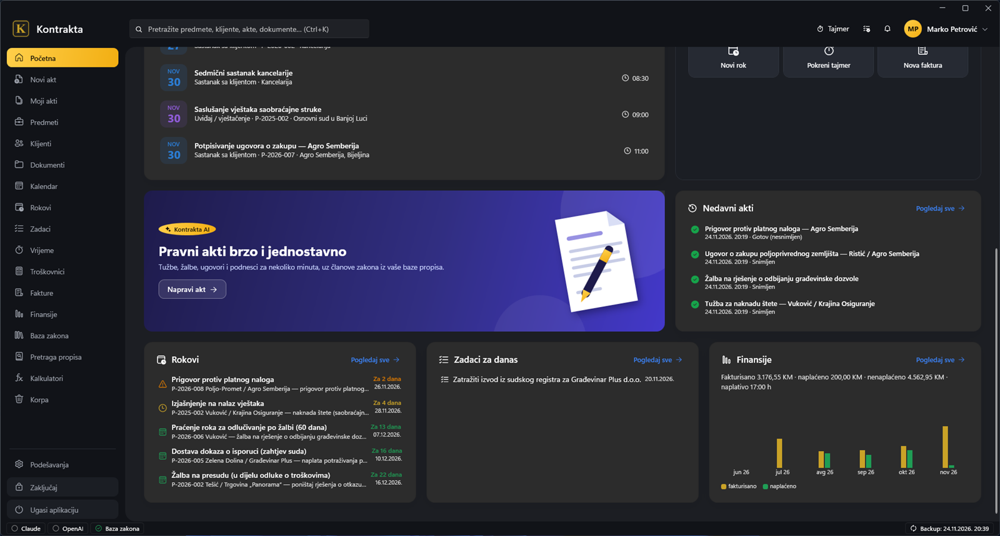

Pravni akti za nekoliko minuta, kancelarija pod kontrolom
Kontrakta Desktop piše nacrt tužbe, žalbe, ugovora ili podneska iz vašeg opisa slučaja, uz članove zakona iz vaše baze propisa. U istom programu vodite predmete, ročišta, rokove, troškovnike i fakture.

Manje papirologije, više vremena za klijente
Kontrakta preuzima posao koji advokatu oduzima najviše vremena: prepisivanje podataka, traženje članova zakona, računanje rokova i sastavljanje računa.
Nacrt akta za nekoliko minuta
Opišite slučaj svojim riječima ili ubacite PDF tužbe, presude ili rješenja. AI popunjava formu, a zatim piše akt sa pravnim osnovom iz članova vaše baze zakona.
Umjesto: praznog Word dokumenta, kopiranja starih podnesaka i ručnog traženja članova.Nijedan rok ne promakne
Kalkulator računa posljednji dan roka uz neradne dane i praznike, postavlja interni rok nekoliko dana ranije i šalje podsjetnike 7, 3 i 1 dan prije isteka.
Umjesto: rokovnika, ceduljica i brojanja dana u kalendaru.Naplatite svaki sat rada
Tajmer bilježi vrijeme po predmetu, troškovnik računa nagradu po advokatskoj tarifi, a stavke jednim klikom prelaze na fakturu sa QR kodom za plaćanje.
Umjesto: procjene na kraju mjeseca i računa u Excelu.Cijeli predmet na jednom mjestu
Stranke, dokumenti, akti, ročišta, rokovi, bilješke i novac. Provjera sukoba interesa upozorava prije nego što dodate stranku koja se već pojavila u drugom predmetu.
Umjesto: fascikli, foldera na disku i pretrage mailova.Sve što advokatskoj kancelariji treba
Izrada akata i vođenje kancelarije u jednom programu, pa se podaci o predmetu, strankama i sudu unose samo jednom.
Izrada akata uz AI
Tužba, odgovor na tužbu, žalba, prigovor, punomoć, podnesak i 9 vrsta ugovora, uz izbor ChatGPT-a ili Claude-a.
Popuni iz dokumenta
AI pročita PDF tužbe, presude ili rješenja i popuni formu i ključne navode. Prije izmjene pokazuje šta mijenja.
Baza zakona
Pretraga propisa po značenju ili po tačnom članu i kopiranje citata. Prije generisanja provjerava da citirani član postoji.
Uređivač akta
Uređivanje kao u Wordu, verzije izmjena i izvoz u DOCX i PDF sa memorandumom kancelarije.
Kalendar i rokovi
Ročišta, sastanci, rokovi i zadaci u jednom kalendaru, uz Windows podsjetnike i iCal izvoz.
Vrijeme i troškovnik
Tajmer i ručni unos vremena, troškovnik po advokatskoj tarifi i zahtjev za naknadu troškova postupka.
Fakture i finansije
Računi, predračuni, avansi i storna, uplate, opomene, potraživanja po starosti i izvoz za knjigovođu.
Sigurnost
Šifrovana baza, automatsko zaključavanje i šifrovani backup koji se vraća i na drugom računaru.
Od prijema presude do naplate
Podaci iz predmeta sami prelaze u akt, vrijeme i troškovi u fakturu, a uplata u finansije. Ništa ne prepisujete dva puta.
Koraci koje radi AI. Sve ostalo aplikacija radi lokalno, i bez interneta.
Pogledajte program iznutra
Početna: predstojeća ročišta, nedavni akti, rokovi u boji hitnosti, zadaci za danas i finansije po mjesecima.
Vaša kancelarija, vaš način rada
Svaka kancelarija radi drugačije, zato se Kontrakta prilagođava vama, a ne obrnuto.
Vaš memorandum
Učitajte vlastiti Word memorandum sa zaglavljem, podnožjem i logom: izvezeni akt izgleda tačno kao dokument vaše kancelarije. Logo, adresa i žiro računi idu i na fakture i troškovnike.
Vaša pravila
Numeracija predmeta i faktura, satnica po klijentu ili predmetu, tarife, liste aktivnosti, podsjetnici, praznici i pravila računanja rokova po zakonodavstvu. Svijetla ili tamna tema.
Podaci vaših klijenata ostaju kod vas
- Predmeti, klijenti, dokumenti i fakture čuvaju se samo na vašem računaru, u šifrovanoj bazi. Nema servera na kojem su vaši spisi.
- Na internet ide samo upit AI provajderu kad izrađujete akt i upit za pretragu zakona.
- Bez interneta rade predmeti, kalendar, rokovi, vrijeme, troškovnici, fakture i finansije.
- Automatsko zaključavanje kad niste za računarom i ključ za oporavak ako zaboravite lozinku.
- Šifrovani backup, dnevno ili sedmično, koji se vraća i na drugom računaru.
Šta vam treba
- Računar sa Windowsom 10 ili 1164-bit. Program se instalira na računar kancelarije.
- AI ključ (OpenAI i/ili Claude)Ključ je vaš: potrošnju plaćate direktno provajderu, prema upotrebi. Program pokazuje potrošnju po mjesecima.
- Baza zakonaVlastiti besplatni Supabase projekat. Uz program dolazi 12 početnih zakona za RS, FBiH i BD, a njihov uvoz košta ispod 1 USD, jednokratno.
Od prve prijave do naplaćene fakture
Uputstvo u 24 poglavlja, sa slikama ekrana: izrada akata, baza zakona, predmeti i stranke, kalendar i rokovi, vrijeme, troškovnici, fakture, finansije, backup i prečice na tastaturi.
Česta pitanja
Da li je akt koji napravi AI spreman za predaju sudu?
Akt je nacrt koji pregledate i doradite. Prije generisanja program provjerava da svaki upisani član postoji u zakonu, a uz gotov akt vidite obrazloženje kako je sastavljen i tekst svakog citiranog člana. Odgovornost za sadržaj ostaje na advokatu.
Gdje se čuvaju podaci mojih klijenata?
Samo na vašem računaru, u šifrovanoj bazi. Kontrakta nema server na kojem bi se čuvali vaši predmeti, dokumenti ili fakture. Prema AI provajderu odlazi samo ono što unesete u formu kad izrađujete akt.
Koliko košta korištenje AI-ja?
Koristite vlastiti OpenAI ili Claude ključ i plaćate direktno provajderu, samo ono što potrošite. U Podešavanjima vidite broj poziva i procjenu troška po mjesecu za posljednjih 12 mjeseci.
Da li postoji mjesečna pretplata?
Ne. Program se kupuje jednom, bez pretplate i bez licencnog ključa. Nove verzije dobijate kao folder (e-mailom, preko Google Drive-a ili na USB-u), a program prije ažuriranja sam napravi backup.
Koja zakonodavstva i pisma podržava?
Republiku Srpsku, Federaciju BiH i Brčko distrikt, sa sudovima po zakonodavstvu. Akt dobijate latinicom ili ćirilicom, a zakon možete uvesti i iz ćiriličnog teksta.
Radi li program bez interneta?
Da. Bez interneta rade predmeti, klijenti, dokumenti, kalendar, rokovi, zadaci, evidencija vremena, troškovnici, fakture i finansije. Internet treba samo za izradu akata, čitanje dokumenata i pretragu propisa.
Mogu li koristiti svoj memorandum?
Možete. Učitajte Word dokument sa vašim zaglavljem, podnožjem i marginama, i svaki izvezeni akt izlazi na vašem memorandumu. Bez njega se memorandum pravi iz podataka kancelarije i loga.
Koji su sistemski zahtjevi?
Windows 10 ili Windows 11, 64-bit. Za izradu akata trebaju AI ključ i baza zakona, opisani u poglavlju 1 korisničkog uputstva.
Pogledajte Kontraktu na primjeru vaše kancelarije
Pozovite ili pošaljite mail. Rado ću vam pokazati kako program radi i kako se prilagođava vašoj kancelariji i vašem načinu rada.
Šta dobijate
Jedan program za izradu akata i vođenje cijele kancelarije, kupljen jednom.
- Izrada 16 vrsta akata i ugovora uz vašu bazu zakona
- Predmeti, klijenti, dokumenti, kalendar, rokovi i zadaci
- Evidencija vremena, troškovnici po tarifi, fakture i finansije
- Vaš memorandum, logo i žiro računi na aktima i fakturama
- Nove verzije bez pretplate
Manje vremena za papire, više za klijente
Prezentacija je besplatna i bez obaveze. Pokazaću vam izradu akta, rokove i fakturisanje na primjeru iz vaše prakse.